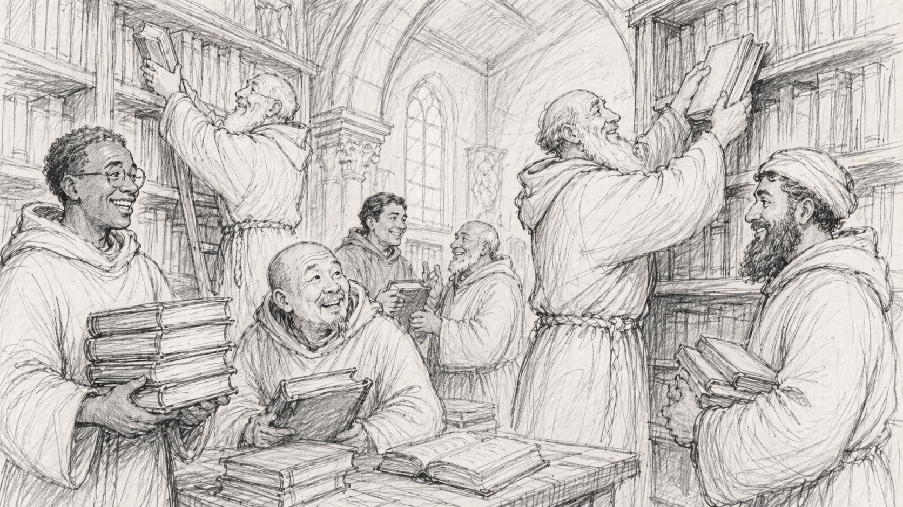

Preservation Hub
Preservation Hub is a curated preservation environment for scholarly materials that may be lawfully archived and redistributed under their original licensing terms.

The Hub preserves and makes accessible materials already released elsewhere, including journals, articles, metadata files, and related archival representations. It is not a publishing arm, and all preserved records remain governed by their original authorship and licensing conditions.
Current collections
Journals

Browse preserved journal collections and access their archived records.
Other collections
Further preserved collections may be added in due course, including thematic or documentary groupings consistent with the Hub’s remit.
Preservation principles
- Materials are preserved and made accessible in accordance with their original licences.
- Borderland Education Network does not claim ownership over preserved third-party works.
- Preservation metadata and archival representations are clearly distinguished from the original published source.
- The Hub operates within a non-commercial scholarly framework.